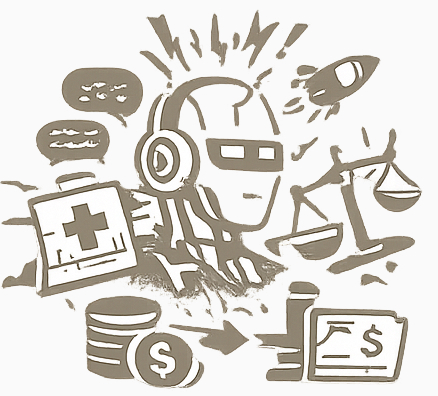
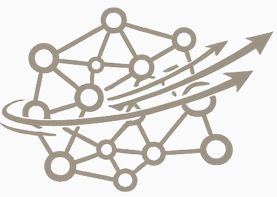

Graph-Based AI Architecture for Safe and Reliable Intelligence
AI safety is not only about external protection layers. It also depends on the internal architecture of the model itself.
One of the most urgent categories of AI risk today is incorrect outputs: hallucinations, unstable reasoning, inconsistent answers, and unsafe decisions made with high confidence.
Reazonex was created to address this problem at its root level.
Most modern AI systems are based on transformer architectures optimized for probabilistic token generation. While powerful, they may produce false answers, unstable reasoning paths, and unpredictable outputs.
In critical domains such behavior becomes a direct safety risk.
Reazonex approaches intelligence differently.

Instead of generating token sequences statistically, Reazonex reasons through a structured graph of entities, states, actions, properties, relations, and causality.
Thinking is performed through graph traversal, influence propagation, consistency checks, and deterministic reasoning paths.

Reazonex does not depend on expensive AI accelerators for operation or learning. Graph reasoning workloads can run efficiently on conventional hardware.
This allows performance that can be orders of magnitude faster than transformer inference in many reasoning-oriented tasks.
Reazonex is designed for continuous learning by construction.
New information is inserted directly into the knowledge graph, updating nodes, relations, priorities, and causal pathways.
This differs fundamentally from systems that preserve frozen weights while placing new information into temporary memory layers or retrieval notes.
If AI is responsible for security, infrastructure, medicine, or dynamic decision-making, the inability to fully adapt to new realities becomes a safety issue.
We developed a universal graph framework capable of representing domains across the full spectrum of human knowledge.
This enables one reasoning architecture to operate in both highly formalized and loosely structured environments.
The most resource-intensive stage is the initial population and training of the graph.
Large language models are well suited for this phase as structured knowledge extraction engines that help build the graph efficiently.
Once built, the reasoning layer operates independently with much lower computational demands.
Reazonex exists in multiple deployment forms.
The next generation of AI must not only be powerful. It must be stable, explainable, adaptive, and safe.
Reazonex is designed to make that possible.
Reasoning first. Safety by architecture.